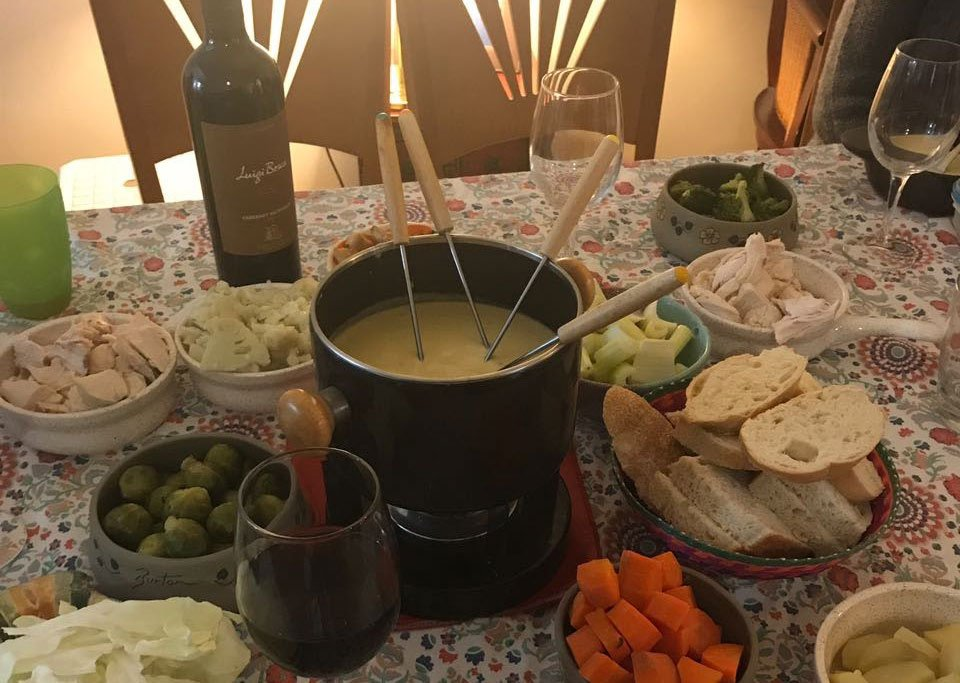

Bagna Cauda

Bagna Cauda is an italian dip that is served very hot
This dip should be served over a heater to ensure that it always remains hot.
You have to really like garlic to enjoy this.
I have heard that some people omit the cream and substitute olive oil also.
Serve with crusty Italian bread, raw cabbage wedges, lettuce, bread sticks or crackers.
Ingredients
- ½ cup butter
- 10 cloves garlic, minced
- 2 (2 ounce) cans anchovy fillets, drained
- 1 pint heavy cream
Steps
- Melt butter in a medium saucepan over medium heat.
- Stir in garlic and cook until tender.
- Reduce heat to low.
- Mix in anchovy filets and heavy cream.
- Cook and stir until thickened.
- Remove from heat, cover and chill in the refrigerator approximately 2 hours.